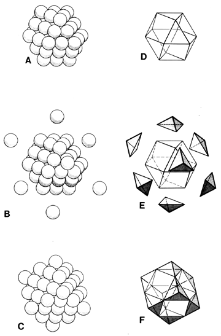

|  |
| Fig. 415.17 Nucleated Cube: The "External" Octahedron: ABC shows that eight additional closest- packed spheres are required to form the minimum allspace-filling nuclear cube to augment the nuclear vector equilibrium. DEF show the eight Eighth-Octa required to complete the polyhedral transformation. (Compare Fig. 1006.32.) |